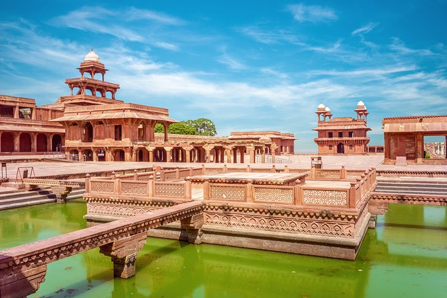
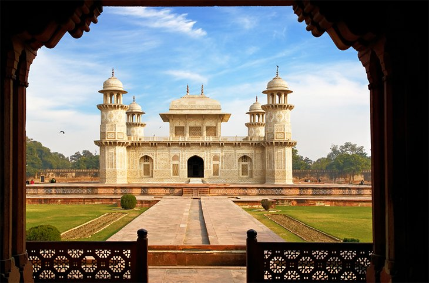

Fatehpur Sikri

Just an hour's drive from the Taj Mahal, Fatehpur Sikri makes for a worthwhile day trip from Agra. The city, once the capital of the Mughal Empire some 500 years ago, was built by Akbar as a salute to the famous Sufi saint, Shaikh Salim
Chishti, who accurately predicted the birth of an heir. Residents abandoned the city not long after it was built, when water supplies ran too low.
Tourists can now explore the well-preserved remains of this red sandstone ghost town, still surrounded by a fortification wall. Check out the Jama Masjid, a mosque and one of the first buildings finished in the city. Then, explore the
three palaces, built for each one of Akbar's wives. They combine a variety of religious-inspired architectural styles that honor the women's individual spiritualities.
Finally, get off the beaten path and stroll to Hiran Minar, a circular spiked tower covered with stone elephant tusks, atop which Akbar himself supposedly gazed at wildlife.
Dig in deeper to this incredible site with a visit to the Archaeological Museum, near the Diwan-i-Am main gate. It contains four galleries filled with treasures from the Mughal era and beyond, including grey ware pot shreds, terra-cotta
lamps, mini human heads in stone, jewelry molds, and much more.
Itimad-ud-Daulah's Tomb

On the banks of the Yamuna River sits another one of Agra's exquisite structures: Itimad-ud-Daulah's Tomb. The mausoleum contains the remains of Mirza Ghiyas Beg, a Persian official who served the Mughal empire, as well as his wife.
Legend has it that this jewelry box-like tomb was actually the inspiration for the Taj Mahal, earning it the nickname "Baby Taj." The red sandstone and marble structure features 13-meter-high hexagonal towers on each corner.
The most noteworthy thing about this attraction, though, is that it was the first structure to use pietra dura, the iconic Indian inlay technique that uses semiprecious stones to create decorative floral designs in marble. You'll see exquisite
geometric patterns, depictions of vases and cups, and delicate flower bouquets from floor to ceiling of the graceful structure—reminiscent of those on the Taj Mahal.
Despite its beauty, Itimad-ud-Daulah's Tomb gets far fewer visitors than other attractions around Agra, making it an ideal place to appreciate the lovely features without the crowds.